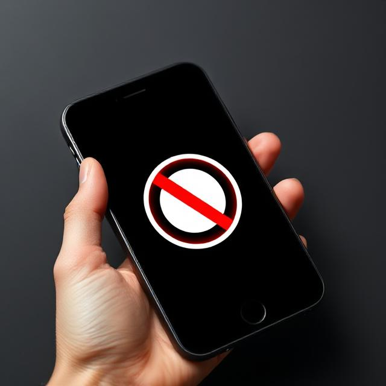
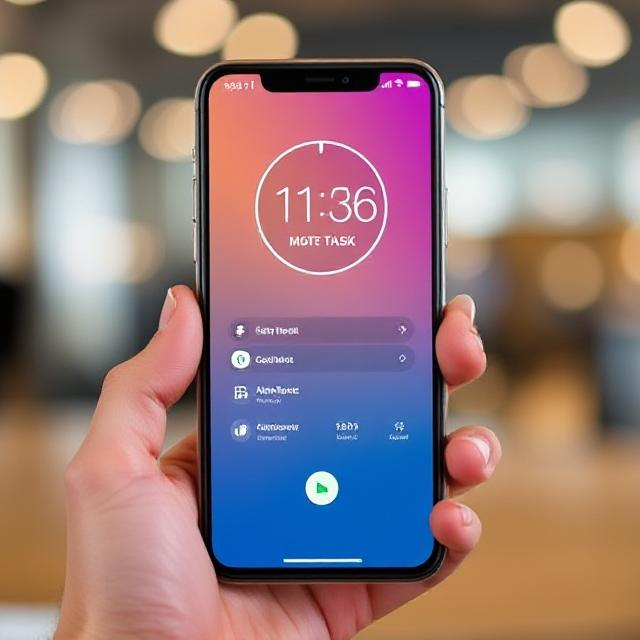
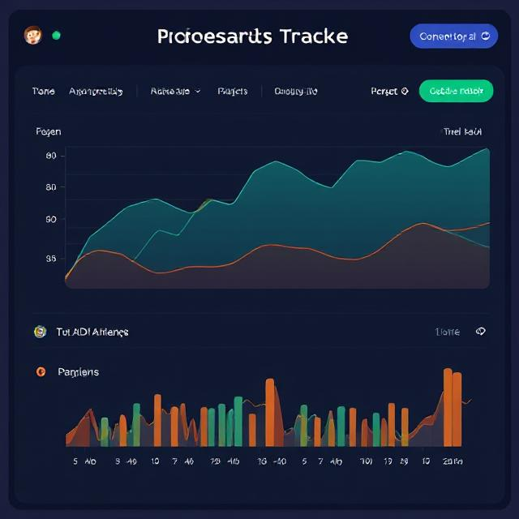

Focus. Finish. Freedom.
Zelo
is the ultimate productivity companion for anyone looking to stay focused, finish tasks faster, and
reclaim their free time. Whether you're a student, remote worker, or entrepreneur — Zelo helps you
block distractions and stay in the zone.
Our Product Key Features

Distraction Blocker
Automatically silences notifications & social media.

Smart Task Timer
Break your day into focused sessions with built-in breaks.

Progress Tracker
Visual stats on your productivity trends.
Cross-Device Sync
Access your focus sessions from any device.
Since I started using Zelo, my workdays are shorter — and my evenings are finally mine again.
— Maya Bennett, Freelance Designer